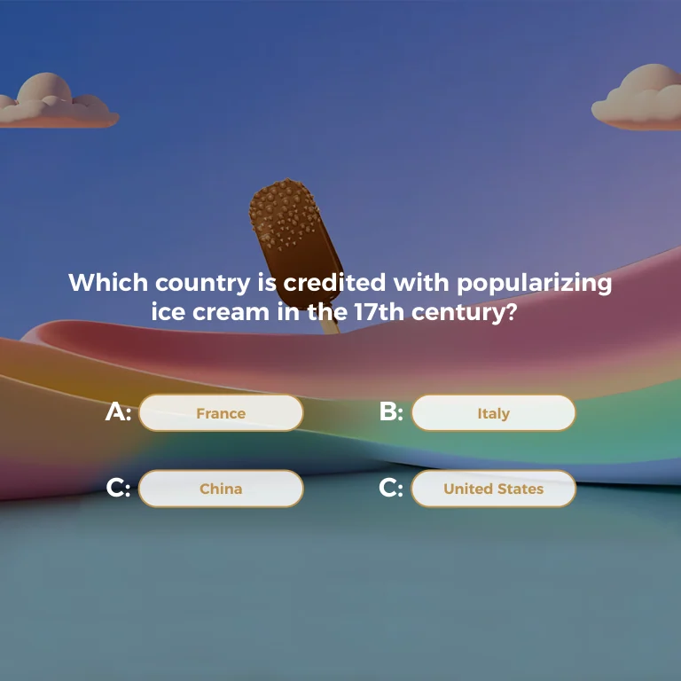

Two-column answer pills
The second native artboard contains one question, four answer pills and a pastel illustrated backdrop.
A question held within a playful pastel scene.
Explore the story
Keep answer targets visible while preserving the illustrated setting.
White question text sits above a two-column set of pills. A chocolate-coated ice-cream form, pastel ribbons and blue sky surround the interaction area.
The second native artboard contains one question, four answer pills and a pastel illustrated backdrop.
The logo-off export removes 83 header vector paths while preserving the embedded full-artboard illustration, live text and interface objects.
The native question screen combines a soft blue sky, pastel ribbons and a central chocolate-coated ice-cream shape.
Explore the complete compositions and interface states. Select any image for a closer look.
Structure, interaction and visual decisions that give the work its character.
RoleContribution awaiting confirmation
AssetsPrivate evidence draft. Individual contribution, implementation and public-use permission remain unverified. Native files establish saved artwork, not personal authorship or original modeling. Supplied, licensed, collaborator and AI-assisted components require separate attribution. One QnA component in the P298-22 event container. The background/image origin remains unverified; neither original 3D modeling nor original illustration is claimed.
StatusPrivate native-artwork draft; contribution, implementation and public use unverified